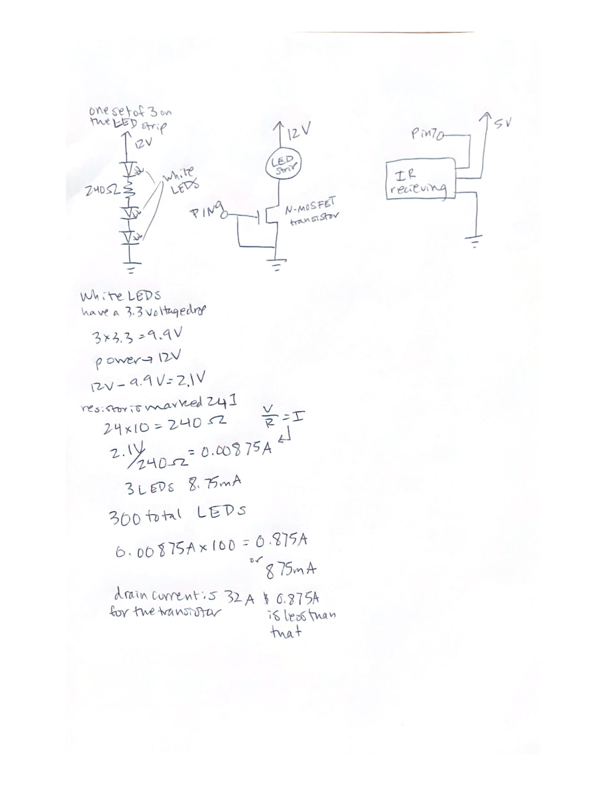

Alissa Acheson's Assignment 5!


Above is the circuit that contains the IR reciever module and the LED strip LEDs, the LED strip is made up of 300 white LEDs, each set of 3 has a 240 ohm resistor. Not pictured is the IR remote that communicates with the IR receiver module.

Above is the calculations for the amount of current used by the LEDs to justify the transistor use and the schematic of the circuits used.
Below is the Ardunio code that the board is using, fading the LEDs on and off red when 5 is pressed and yellow when 2 is pressed.
/*
* This code references this example
* https://www.circuitbasics.com/arduino-ir-remote-receiver-tutorial/
* and adds the fading on of the LEDs
*
*/
//calls the library IRremote
#include < IRremote.h >
//sets which pin the reciver is connected to
const int RECV_PIN = 7;
//tells the arduino which pin the IRrecv is connected to
IRrecv irrecv(RECV_PIN);
//defines a variable "results" of type decode_results
decode_results results;
//sets the pin the LED strip is connected to
const int stripPin = 9;
void setup(){
// Start the receiver
irrecv.enableIRIn();
//tells the IRrecv object to flash the LED on and off when an IR signal is received.
irrecv.blink13(true);
//sets the pin 9 connected to LED strip as output
pinMode(stripPin, OUTPUT);
}
void loop(){
//using the function of decode, looks at variable "results"
if (irrecv.decode(&results)){
//accesses the part of results variable called value
switch(results.value){
//if the value reads as this case
case 0xFF18E7: //Keypad button "2"
//turn on strip pin via fade
for (int fadeValue = 0 ; fadeValue <= 80; fadeValue += 5) {
// sets the value (range from 0 to 255):
analogWrite(stripPin, fadeValue);
//wait 30 milliseconds to see fade
delay(30);
}
//wait 1 second
delay(1000);
}
switch(results.value){
//if the value reads as this case
case 0xFF38C7: //Keypad button "5"
//turn strip pin off
digitalWrite(stripPin, LOW);
}
//recieve next value
irrecv.resume();
}
}
Below is the final operation, the gif shows the 2 button being pressed the LEDs fading on, then the 5 button being pressed and the LEDs switching off.